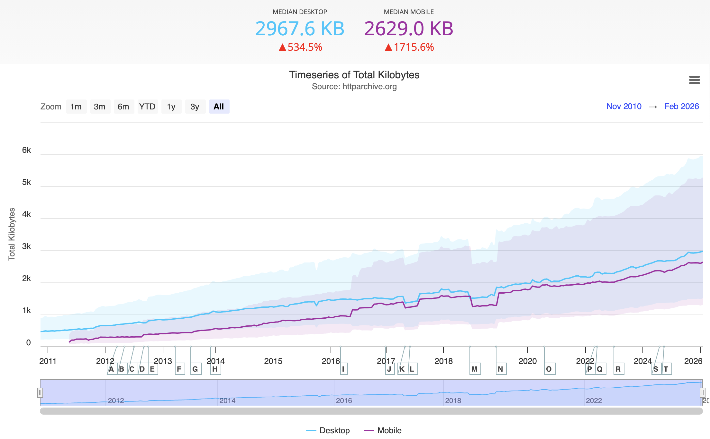

Publishing on the Handmade Web
The Urgent Publisher
The Urgent Publisher





"I really appreciate your call, throughout the book, for people to get their hands dirty. Not to critique technology in the abstract, but to actually build things. That resonated with me as a gardener, in the sense that gardening has allowed me to develop a more active awareness of the fact that we live in a more-than-human world. It’s a really powerful kind of awareness to have, and it’s precisely the kind of awareness that I would want to have about technology. Is making things the technological equivalent of gardening with code?"
– Claire L. Evans interviewing James Bridle


“site writing” is when “discussions concerning situatedness and site-specificity enter the writing of criticism, history and theory, and writers reflect on their own subject positions in relation to their particular objects and fields of study, and on how their writing can engage materially with their sites of inquiry and audiences.” - Jane Rendell


Plant a seed for your future website
i.e publish a beginning to the web

A laptop with:
HTML consists of a series of elements, which you use to enclose, wrap, or mark up different parts of content to make it appear or act in a certain way. The enclosing tags can make content into a hyperlink to connect to another page, italicize words, and so on.
As defined in the Oxford Dictionary, "hyperlocal" is an adjective that relates to or focuses on matters concerning a small community or a specific geographical area.
<p>As defined in the Oxford Dictionary, "hyperlocal" is an adjective that relates to or focuses on matters concerning a small community or a specific geographical area.</p>
"The <div> HTML element is the generic container for flow content."
Elements can be placed within other elements. This is called nesting.
<p>hyperlocal is an adjective that relates to or focuses on matters concerning a small community</p>
<p>hyperlocal is an adjective that relates to or focuses on matters concerning <strong>a small community</strong></p>
<section class="slide">
<p>hyperlocal is an adjective that relates to or focuses on matters concerning a small community</p>
</section>
Elements can also have attributes. These contain extra information about the element that won't appear in the content.
<p>hyperlocal is an adjective that relates to or focuses on matters concerning a small community</p>
<p style="color: red;">hyperlocal is an adjective that relates to or focuses on matters concerning a small community</p>
Unordered List
<ul>Ordered List
<ol>